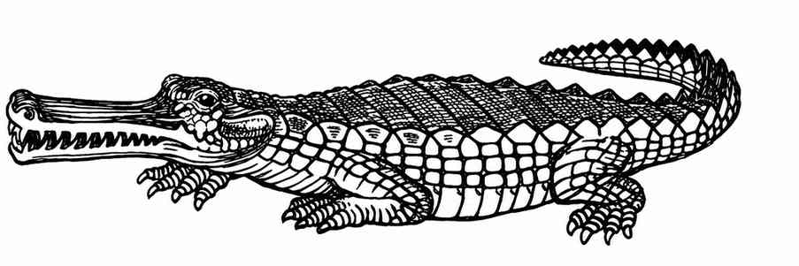

鳄鱼 · Crocodile

| 项目 | 普通鳄鱼 | 巨型鳄鱼 |
|---|---|---|
| 出现频率 | 常见 | 极罕见至常见 |
| 出现数量 | 3–24 | 1，或 2–12 |
| 护甲等级 | 5 | 4 |
| 移动力 | 6 寸／12 寸（水中） | 6 寸／12 寸（水中） |
| 生命骰 | 3 | 7 |
| 在巢穴概率 | 无 | 无 |
| 财宝类型 | 无 | 无 |
| 攻击次数 | 2 | 2 |
| 攻击伤害 | 2–8／1–12 | 3–18／2–20 |
| 特殊攻击 | 无 | 无 |
| 特殊防御 | 无 | 无 |
| 魔法抗性 | 标准 | 标准 |
| 智力 | 动物级 | 动物级 |
| 阵营 | 中立 | 中立 |
| 体型 | L（长 8–15 尺） | L（长 21–30 尺） |
| 灵能能力 | 无；攻击／防御模式：无 | 无；攻击／防御模式：无 |
虽然有些鳄鱼体型巨大，但通常只有在咸水水域或史前环境中才会遇到这类巨兽。所有鳄鱼都愚钝而贪食。寒冷天气会使它们行动迟缓（移动力减半）。它们通常潜伏起来，以便突袭猎物；掷 1d6，结果为 1–3 时，猎物会遭到突袭。